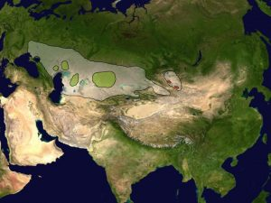

| Kingdom: | Animalia |
|---|---|
| Phylum: | Chordata |
| Class: | Mammalia |
| Order: | Artiodactyla |
| Family: | Bovidae |
| Subfamily: | Antilopinae |
| Genus: | Saiga |
| Species Name: | Saiga Tatarica |
Saiga Antelope Horns. Ringed at the bottom.
Saiga Antelope Skull
They mainly prefer open dry steppes, semi-desert grasslands where they are able to run quickly away from predators.
• The sense of hearing of these animals is poor. However, they have a very keen sense of vision that helps them see and locate danger over long distances of up to a kilometer. Normally, a thirsty Saiga would visit water holes twice a day.
• They are able to eat several species of plants, including some that are poisonous to other animals.
• The saiga antelopes can easily cover long distances in herds and even swim across rivers, unlike other antelopes. This is a big defensive adaptation.
• Saiga is a very fast animal. It can run up to 80 per hour, especially when it is trying to escape from the predators.